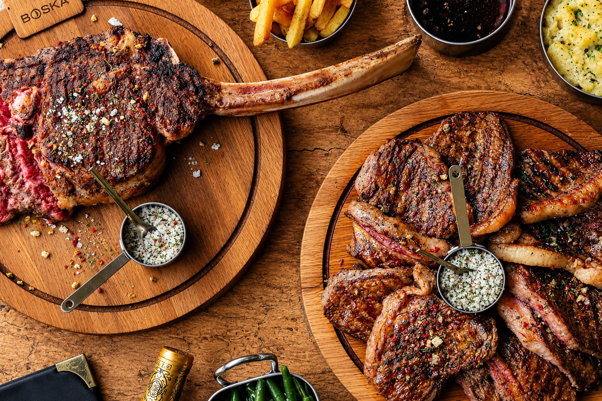

Laissez-vous tenter par nos viandes de races et d'origines

Réserver une tableLe Bo'Vin vous accueille à Vincennes pour déguster des viandes de races et d'origines sélectionnées avec exigence, dans un cadre chaleureux.
6B avenue du Général de Gaulle, 94300 Vincennes
Téléphone : 01 79 86 27 60
Email : lebovincennes@gmail.com